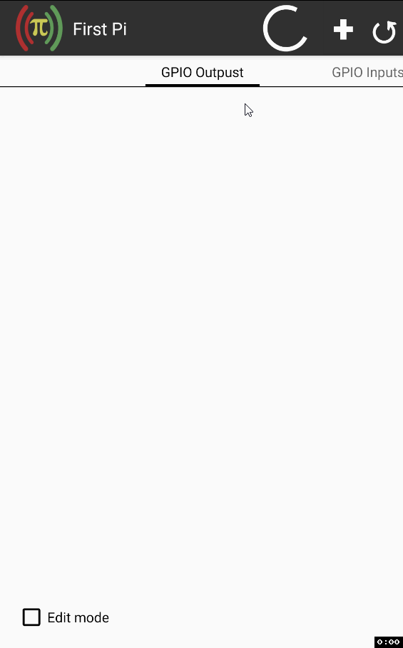

Remote GPIO Control
Application allows control GPIO port on Pi devices via android application client or build in www client.
Main features
- Control the states of output pins
- Read the states of input pins
- Control software PWM output pins
- Link multiple pi devices
- Create sequential execution chains through all linked pi devices
- Define and run custom shell commands
- Read/store data from sensors
- build in support for:
- custom sensor (create own script to return value)
- Transmit or recive radio frequency codes with generic low-cost GPIO RF modules
- Create automated actions to change output/pwm, execude chain sequence, transmit RF or run custom command, such actions can have multiple triggers through all linked pi devices with custom conjunction
- Create android desktop widget for fast output change, read sensors value or execude chain sequence
- Setup android notification base on output/input status or sensor value
Preview
Web client preview

Android client preview

Support
Tested and working on Raspberry Pi devices with Raspiain OS.
Tested and working with Banana Pi devices with this library.
Tested and working with Orange Pi Zero devices with this library. (Import replacement from "import RPi.GPIO as GPIO" to "import OPi.GPIO as GPIO" in file rgc-server.py is necessary)
Should work on similar devices/OS's but it requires a library RPi.GPIO (Raspbian OS already has it) or another based on it.
License
Remote GPIO control server is available under the MIT license.
Donation
If you like this project please consider a donation: